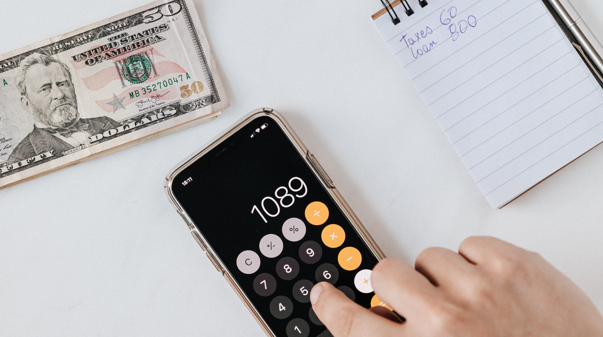
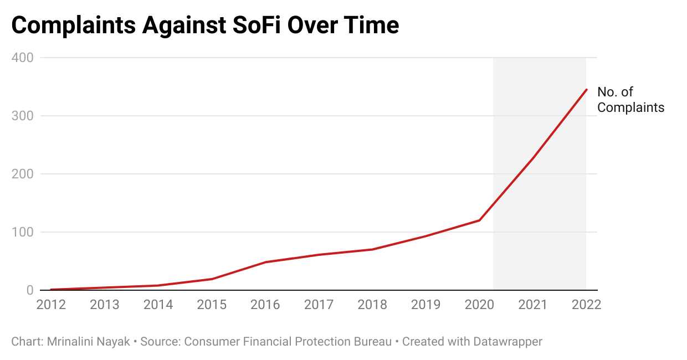

Small Businesses More Vulnerable To Borrow Short-Term Loans Post-Pandemic
37 out of 50 U.S. States have capped the lending amount and interest rates in an attempt to regulate payday loans.
Representational Image: Calculating expenses including loans.
American small businesses are borrowing short term loans called Merchant Cash Advance (MCA) to tackle rising costs due to inflation. These loans are tempting as business owners started running out of financial reserves, but willing to take on huge interest rates for quick solutions.
As the Fed is raising interest rates in an attempt to battle inflation, everything from groceries to rents are turning increasingly unaffordable.
"It was too crazy. I’ve seen people take out short-term loans at crazy interest rates, borrow from family and friends, and max out their credit cards to pay the rent," said Matthew Hill, an attorney at the Public Justice Center in Baltimore County, MD.
Payday loans are short term, high interest loans that are given to customers who cannot avail quick loans from a regulated lending institution like banks. Some payday lenders charge interest rates reaching up to 600%, which is way higher than credit cards and traditional loans. If the borrowers are unable to pay back the loan and interest amount, their credit score declines.
The Making Ends Meet 2022 report published by the Consumer Finance Protection Bureau states that in 2021, small businesses could afford to pay their bills comfortably due to the tight labor market, government aid and reduced overall spending. By 2022, these factors started declining, painting a picture of uncertainty for most households and businesses. The CFPB is a federal agency that protects consumers in the financial marketplace.
Social Finance, Inc (SoFi) is a popular online website for such loans. It offers a wide range of loans from student loans to mortgage / loans to small business financing. The company has received close to a 1000 complaints according to the / CFPB’s "Consumer Complaint Database," a portal designed for consumers to file complaints with the agency. / When a consumer reports their issue to the agency, the company responds to it - a copy of which is unavailable to the public. The consumer can then choose to dispute this response based on their satisfaction.
This graph shows the number of complaints against SoFi has gone up since the start of the pandemic.
Out of the 1000 complaints, at least 21 customers said they disputed the resolution offered by SoFi. 64 said they did not dispute the resolution and the remaining responses were unavailable.
Companies like SoFi have terms and conditions which explicitly state that the customer is "responsible for your financial decision". It further states that its products and services are offered to the customer on the condition that they will fully evaluate their financial condition. It also has an indemnification clause that limits its damages in case the customer files any claims or losses. This begs the question as to why small businesses opt for these loans despite such high risks.
Due to the higher risk of borrowing, 37 out of 50 U.S. States have capped the lending amount and interest rates as a way of regulating it. Payday loans are permanently banned in New York State and termed as "predatory loans".
"Many payday loans are illegal in New York; other short-term loans are strictly regulated. Here, we offer advice on how to avoid getting trapped in an endless debt cycle," said Letitia James, the New York State Attorney General, in a press release.
Federal agencies are still behind on regulating these companies that market their loan services to vulnerable individuals and businesses, without checking if they can afford to repay it. Borrowers who cannot repay it are often left in a lurch as they try to re-borrow from a different vendor or miss out paying for essentials like rent, buying food and medicines.